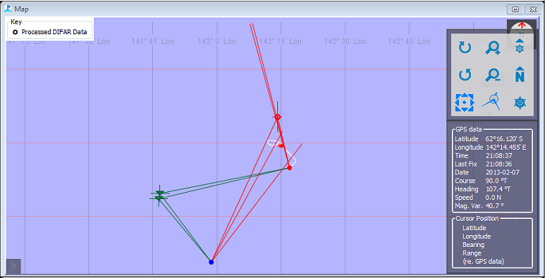

The DIFAR Localisation module estimates the location of a calling whale by triangulation, when the same call is received on two or more sonobuoys.
When more than one sonobuoy is in use, PAMGuard attempts to match each saved DIFAR clip with DIFAR clips of the same call on other sonobuoys. The location where the bearings of the matched DIFAR clips cross is the estimated location of the sound source.

When a DIFAR clip is processed, PAMGuard searches for DIFAR clips on other sonobuoys that could contain the same call. A sound cannot arrive at two sonobuoys further apart in time than the time it takes to travel between them, so only DIFAR clips within that time, plus the detection timing error, are considered. Of these, the DIFAR clips closest in time and frequency are kept, up to the Max candidates per buoy.
Arrival time differences are normally taken from the start times of the DIFAR clips. When Time delays by correlation is selected, they are measured instead by cross-correlating the spectrogram of the omnidirectional channel of each candidate with that of the DIFAR clip being matched, over the frequency band the two DIFAR clips share. This is far more precise when DIFAR clips are placed loosely around their calls, for example by a detector with a long window. A candidate whose correlation peak is below the threshold keeps the time difference from its start time. The correlation assumes that the demultiplexed audio of a DIFAR clip starts at the DIFAR clip's time, which holds for both AAD demultiplexers; the Greeneridge demultiplexer can trim the start of a DIFAR clip without recording it.
Each candidate match is located using both its bearings and the differences in arrival time, as described by Miller et al. (2021). A match whose bearing or timing residual exceeds its limit is rejected, since the DIFAR clips probably do not contain the same call. Of the remaining matches, the match containing the most DIFAR clips, with the lowest bearing and timing residuals, is selected automatically. The operator can override the automatic selection by choosing another match in the Triangulation match selector below the DIFARGram, or can press Clear match to save the DIFAR clip without a triangulation.
The match selector lists, for each candidate match, the number of sonobuoys, the other DIFAR clips, the largest bearing and timing residuals, how many of the other DIFAR clips had their arrival time measured by correlation, chi-squared per degree of freedom, and its status. A match that fits but includes a DIFAR clip already in another triangulation says so, for example "fits; ch14 in triangulation 41". Matching takes DIFAR clips only from those not yet in a triangulation, so such a match was not available when the DIFAR clip was matched, even if it fits better.
A saved match becomes a triangulation: one call received on two or more sonobuoys, with the estimated location of the sound source and the error of that location in the x and y directions. A DIFAR clip belongs to at most one triangulation. A new triangulation takes its DIFAR clips from any triangulation they belonged to. When a DIFAR clip is removed from a triangulation, the triangulation is recalculated if two or more DIFAR clips remain, and is deleted if only one remains.
From PAMGuard version 2.03, triangulations are stored only in the database. Earlier versions stored them in the binary files. Triangulations are stored in two database tables named after the module, such as "DIFAR Localisation Crossings" and its "Children" table, which lists the DIFAR clips in each triangulation. See DIFAR Output.
NB: Triangulations are calculated on a rectangular grid, whereas sound propagation over long distances typically follows a great-circle path. Triangulations that lie very far from the sonobuoys may therefore contain errors that arise from applying a rectangular grid that does not account for the curvature of the earth.
Some triangulations match the same call on different sonobuoys correctly, yet their location cannot be trusted, because the geometry is poor. These triangulations are kept and flagged rather than rejected, so that every correct match remains on record.
Crossing angle: the largest angle between any two bearings of a triangulation, from 0 to 180 degrees. Near 0 degrees the bearings point in the same direction. They cross far away, or not at all, and the location is unreliable. Near 180 degrees the bearings point towards each other. This is not poor geometry: the sound source lies between the sonobuoys, and the difference in arrival times locates it along the line between them.
On a sonobuoy: when the bearing from one sonobuoy points at another sonobuoy, the fit can settle on that second sonobuoy, where its own bearing has no meaning. The reported error there is close to zero, and reflects none of the real sources of error. A triangulation within the On-buoy radius of one of its own sonobuoys is flagged, and its errors are set to that radius. Its location is kept.
Both measures are stored with each triangulation, in the CrossingAngle and OnBuoy columns of the database. Triangulations made before these columns existed have no crossing angle until they are matched again.
Displays that use data selectors, such as the map, offer a data selector for triangulations, in their options for DIFAR Crossings. Each display has its own. Its Triangulation quality panel is enabled by default, and hides:
Triangulations with no crossing angle are shown, since nothing is known against them.
The data selector for DIFAR bearings, in a display's options for Processed DIFAR Data, has a Triangulations panel. It chooses which bearings to show:
Hide bearings in a triangulation on one of its own sonobuoys also hides the bearings of triangulations on a sonobuoy, whose location cannot be trusted. It is not ticked by default.
A bearing still being worked on, with a proposed match but no saved triangulation, counts as triangulated, and is not hidden as on a sonobuoy, since its triangulation cannot yet be judged.
Each display keeps its own settings, so one map can show every bearing while another shows only triangulated ones.
This replaces the Crosses only box of earlier versions. Settings saved with it ticked become Only bearings in a triangulation.
Tracked groups have been removed. PAMGuard 2.02.19 and earlier could label DIFAR clips with a group name and show a summary of each group's bearings on the map. The feature was little used and slowed processing more and more over long runs. Databases made with those versions keep their tracked groups table, but PAMGuard no longer reads or writes it, and warns when it finds one. Use PAMGuard 2.02.19 or earlier to view old tracked groups.
Previous: Using the DIFARGram Display